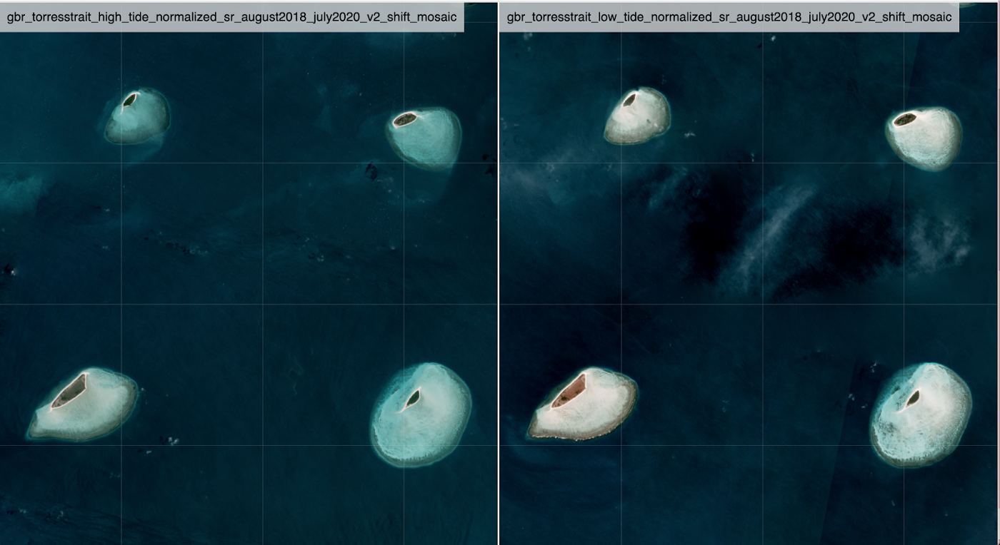
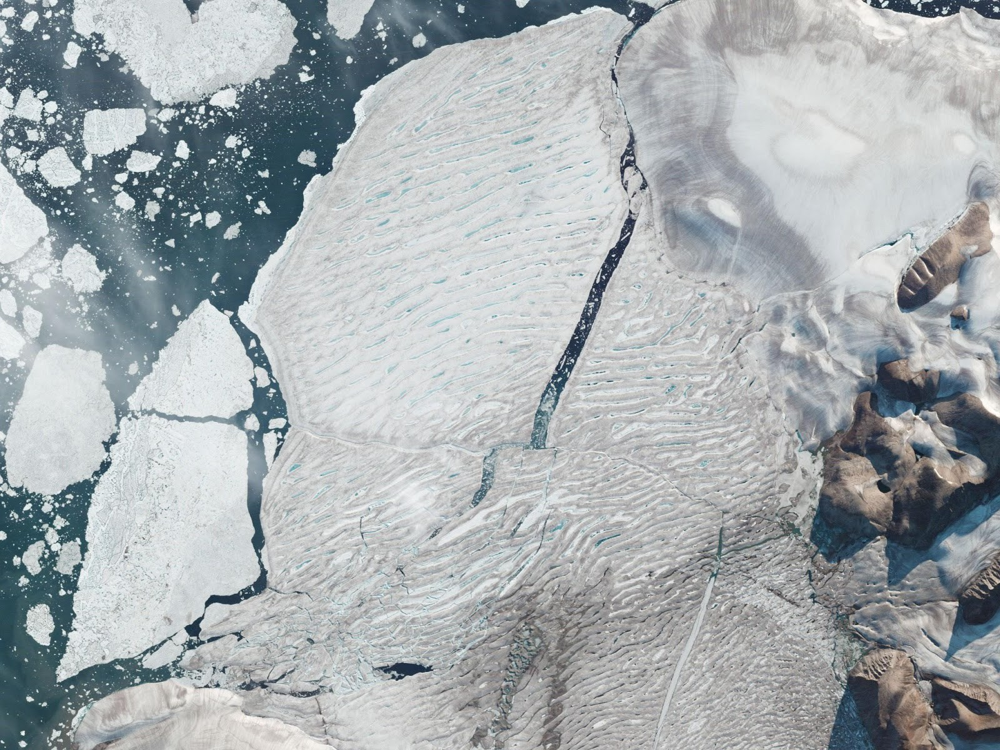
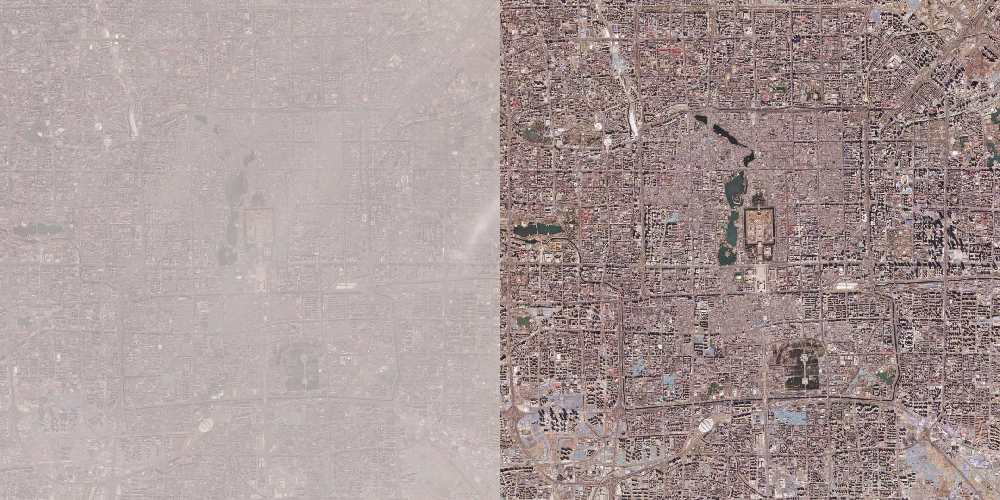

Week 3: Earth Observation & Real-World Problems
Seeing Change
The Earth is constantly changing. There are daily cycles, yearly cycles and some cycles that change the Earth forever. Cameras in space allow people on the ground to see that change in action, and use those changes to make decisions, plan where to make more changes and even protect the planet.
Here are some examples of how satellite imagery can be used to see change from space:
Daily Tides
If you’ve been to a beach, maybe you’ve seen that sometimes there’s a deep shoreline. Sometimes the water is far away from buildings, while other times the water comes close to the buildings. When you make a sand castle, you make it where the waves can’t reach. But if you stick around and watch the waves, you’ll realize later in the day that they’ll come up and take it! This is the daily dance where the moon pulls water to different tide levels through the day.
These two images were taken in the same place on the same day, and we can see changes in the water levels near the Great Barrier Reef.

Capturing a Changing Landscape
It’s hard to get a good look at an Arctic ice shelf in person. Places like the Milne Ice Sheet are in a frozen sea, off the coast of places that are about as far north as you can get by land.
Understanding how ice changes is important as people study the relationship between climate, ocean levels and the creatures that feed in these icy places. A Planet Dove snapped an image of this crack in the ice, and past photos made it possible to compare and measure how the ice is changing.

Observing Human Impact
Human lifestyles have a profound impact in our planet, and on an ever-more crowded planet the linked challenges of sustainable development, the loss of nature and climate change have reached a critical inflection point.
For humanity to survive and prosper long into the future, we will need to transition to practices that operate safely within the limits of Earth’s life-support systems. At Planet, we like to say that "you can't fix what you can't see": observing human impact is the first step to discovering solutions to global problems that impact us all.
 Planet imagery showing the difference between a smoggy day and a day without smog in Beijing, 2020: read more about how pollution researchers use satellite imagery here.
Activities
Ask yourself the same questions a scientist who is interested in Earth observation might ask themselves: if you could look at anything on the Earth from space, what would it be? Why?
Now think about how that place might change over time: if you returned in a year to observe the same place on Earth, what would be different? What would be the same?
In this week's break-out session, share your answers to these questions with other students. Then, working on your own or in a group, document your questions & answers as a scientist might: begin by writing down your initial questions, then write down what you predict the outcome could be. As a scientist observing change, what would you hope to learn? Think about the information you might gain from your earth observation, and how it would -- or wouldn't -- answer your questions.
Send your write-up to summercamp@planet.com if you'd like to share your work with us.
Further Inspiration
Feel free to explore these on your own this week.
Reading: Blue Marble by Don Nardo
Watching: Spaceship Earth (Documentary)
Q&A With Planeteers
This week, meet Clarence Davis and Maya Midzik: Clarence & Maya will host a Q&A discussion on Thursday at 10:30am Pacific Time.
| Maya is a Software Engineer on the Compute team, where she builds infrastructure to process and deliver Planet's unprecedented firehose of satellite imagery. Maya is passionate about demystifying how scalable systems are run and building diverse communities around all things open-source and geospatial. Outside of work, Maya spends her time hiking with her dog Millie and trying to bike up San Francisco hills. | |
 |
Clarence Davis is a Senior Software Engineer at Planet. |